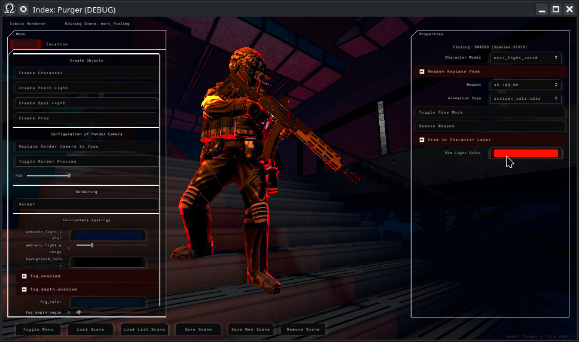
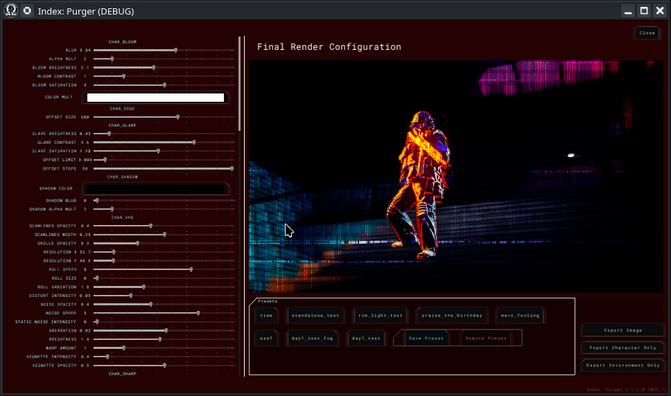
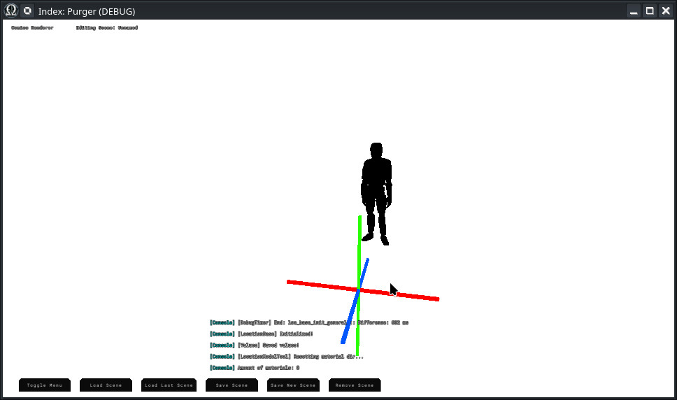
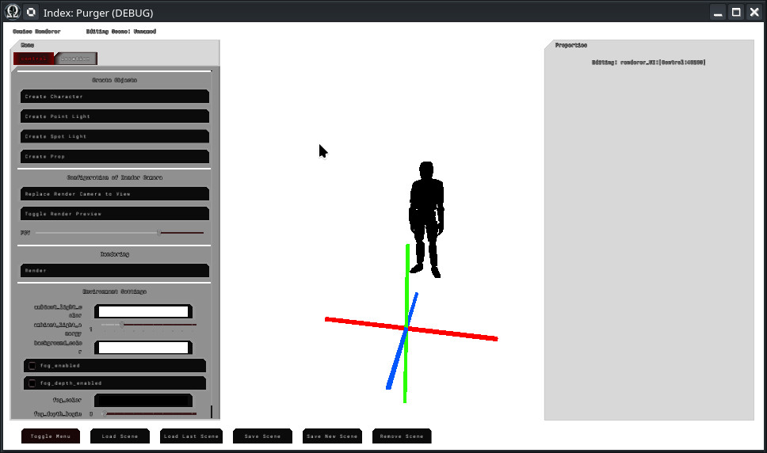
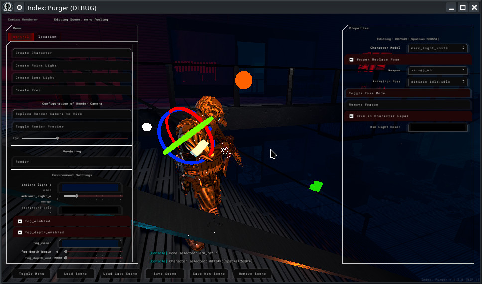
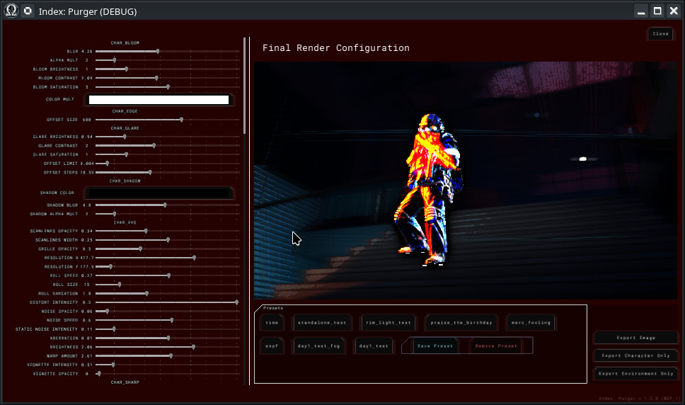

Module: comics_renderer
Documentation last edited: October 22, 2025 at 10:46 UTC
Description


So... Long story short... Why this one exists? Well, i tried working with Blender and GIMP, got some nice results... as well as severe pain in ass in the following moments:
- .blend and .xcf files take up a lot of space
- It's painfully slow
- Hard to edit later
- Et cetera...
Comics Renderer is supposed to be an easy-to-use tool to render characters at any locations with ultimate possibility of returning back to edit it later. This game is featuring comics that are using a lot of glitch effects that would potentially turn it to a glitch-art of sorts. It is extremely fast, separates environment/character by separate layers, controls render cameras and lighting, processes multi-pass rendering with "Shader Layers" and has a plenty of options for exportable images.
Tool Algorithm
- Scene setup
- Load a location
- Place characters and props
- Set up lighting
- Character Posing
- Use IK controls for easy positioning of limbs
- Use bone-level editing for fine tuning of their transforms
- Use existing animations, if needed
- Camera Composition
- Position render camera
- Adjust Field of View
- Preview the render shot
- Rendering
- Configure post-processing effects of Shader Layers
- Use presets, if needed
- Export images (full, character-only, environment-only)
Script Hierarchy
UI
├── comics_renderer_UI_main.gd (Main UI)
│ # - Handles all UI you can see in Comics Renderer, just connects to all these nodes
│ # and does the work with ComicsRendererControl
Helpers
├── camera_control.gd (FPS-Style Noclip Camera)
│ # - WASD, RMB to look around
├── comics_renderer_hit_body.gd (Hit Body Property used for all objects in scene)
│ # - Has plenty of handful info about selected objects, helpful to set up gizmos
├── comic_scene_file.gd (Save File)
│ # - A save file that contains all information about this scene render
├── shader_layers.gd (Shader Layers for processing raw renders)
│ # - A comprehensive array of shader layers that control the appearance of final render
├── text_log.gd (Small Script for Console Logs)
│ # - Makes console logs disappear over time
Nodes
├── bone.gd (Character Bone)
│ # - Provides control of character bone if character has pose-mode active
├── character.gd (Character)
│ # - Character, loads the model, adds some controls for pose-mode, model switching, etc
├── IK_control.gd (SkeletonIK for Legs/Hands)
│ # - IK control for easier control of legs/hands, maybe even weapons
├── loc_obj.gd (A Piece of Location)
│ # - A helper script that allows to edit location meshes (blockouts/props/combined)
├── point_light.gd (OmniLight with love)
│ # - A little fancy OmniLight :)
├── prop.gd (LocationProp with extra steps)
│ # - A prop type script that allows you to spawn your own props to add into your renders
├── render_camera.gd (Camera to Set Position to Render From)
│ # - A rendering camera positioning object that helps to setup a camera for your future render
├── spot_light.gd (SpotLight)
│ # - A little fancy SpotLight :)
Core
├── comics_renderer.gd (The Main Rendering Script)
│ # - The giantic ass fucking renderer, that's all i can say, the hell's kitchen is happening here
│ # - Manages "comics_renderer_control.gd" to interact with UI/rendering
│ # - And this thing is calling the renderer itself a lot
│ # - This isn't good, because it should've been following "call down, signal up" principle...
│ # But oh well...
│ # - Controls "camera_control.gd" to add FPS-like noclip camera with simple WASD+RMB controls
│ # - Uses "render_camera.gd" to setup camera positioning
│ # - Works with "shader_layers.gd" for excessive amount of post-processing
│ # - Interfaces with "comics_renderer_UI_main.gd" for UI
└── comics_renderer_control.gd (A Glue Between UI and Renderer)
│ # - A special singleton class that helps to make it much easier to communicate between
└ # nodes, objects, UI, and the main renderer. Basically just a configuration singleton...
How to use the comics renderer
Change to
comics_renderer
location.

Use controls to navigate yourself:
WASD - Fly around
Space - Fly up
Left Control - Fly down
Right Mouse Button - Rotate view
Press "Toggle Menu" to see more properties to control.

There's following things you can do:
- Click "Location" and choose one of them to load as a scene
- Create some characters, lights, props
- Click on characters or other objects to configure
- If you toggle "Pose Mode" of a character, this will allow you to change their pose
- Press "Replace Render Camera to View" to set render camera to your current view
- "Toggle Render Preview", regulate Field of View according to your needs
- You can additionally tweak ambient light or fog
- Never forget to press "Save Scene" to save your scene of course

- Press "Render" when you are done positioning your scene

- Change post-processing settings
- Use presets, if needed
- Export
Keep in mind: You might need to re-render many times to change lighting settings to make them look great with post-processing.
General Information
Root directories list
assets, docs, src
Nodes
comics_renderer
camera_control
shader_layers
text_log
ComicsRendererControl
comics_renderer_UI_main
bone
character
IK_control
spot_light
render_camera
prop
loc_obj
point_light
Classes
Resources
Other Scripts
None